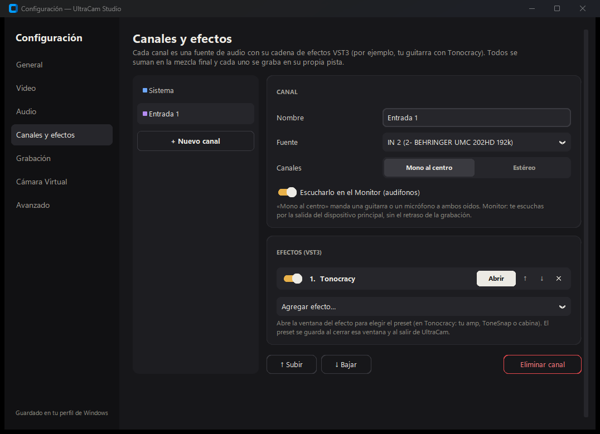
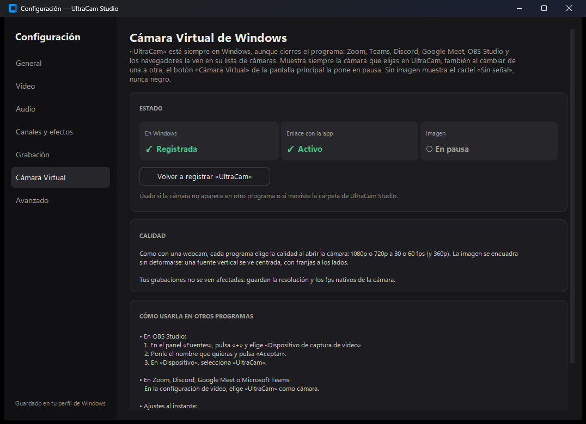

Todas tus cámaras, solas
Webcams USB, capturadoras HDMI, cámaras de laptop y virtuales aparecen en una lista. Elige una y la imagen está ahí, dentro de la app.
Webcams, capturadoras HDMI y tu teléfono como cámara 4K. Mezcla el audio con efectos VST3, graba multipista y envía tu imagen a Zoom, Teams u OBS con una cámara virtual propia.
Sin cuentas, sin anuncios. Tus grabaciones se quedan en tu PC.

Cámara, audio, grabación y cámara virtual trabajan juntos: eliges una fuente una vez y llega a todas partes.
Webcams USB, capturadoras HDMI, cámaras de laptop y virtuales aparecen en una lista. Elige una y la imagen está ahí, dentro de la app.
Android 12+ por cable hasta 4K a 60 fps; iPhone con Iriun Webcam. Si se desconecta, la app lo espera y reanuda sola.
Canales libres con volumen, silencio, solo y vúmetro. Efectos VST3 por canal; si un plugin falla, la app sigue abierta.
«UltraCam» aparece en Zoom, Teams, Discord, Meet y OBS. Sin instalar OBS y sin permisos de administrador.
Un MP4 con la mezcla y una pista por canal, más stems WAV de 24 bits. Normalización a −14 LUFS para YouTube.
El teléfono graba en vertical a resolución completa; la webcam, con recorte central o girada si está de lado.
Los demás programas siempre ven a «UltraCam». Sin imagen muestra un cartel; con la app cerrada, lo dice. Al reabrirla, la imagen vuelve sola.
1080p o 720p a 30/60 fps · 360p · NV12 o YUY2 · convive con la cámara virtual de OBS
Con una interfaz ASIO la latencia ida y vuelta baja a unos 10 ms (búfer 128). Te escuchas con el tono del plugin por el Monitor, sin el retraso de la grabación.


¿Aparece «Windows protegió tu PC»? Es porque la beta aún no está firmada. Pulsa Más información y luego Ejecutar de todas formas.
Sí. UltraCam Studio es software libre con licencia GPLv3: sin cuentas, sin anuncios y con todo el código en GitHub.
No. «UltraCam» es un driver propio que la app registra al abrirse, sin permisos de administrador. Si ya usas la cámara virtual de OBS, conviven sin problema.
La beta todavía no tiene firma digital. Pulsa «Más información» y luego «Ejecutar de todas formas». El código completo está en GitHub para quien quiera revisarlo.
No. Las grabaciones, la configuración y los reportes de problemas se quedan en tu PC. Si algo falla, tú decides si copias el reporte y lo compartes.
Que ya sirve para grabar y transmitir, pero seguimos puliendo detalles. Si encuentras un fallo, usa Configuración › Avanzado › «Copiar registro» y ábrelo como issue en GitHub.
Gratis, portable y sin instalar. v2.1.0-beta · Windows de 64 bits.